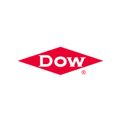

Work Experience
2021.06 - 2021.08
Machine Learning/Computer Vision Engineer Intern | Tencent
- Machine Learning/Computer Vision Engineer for CSIG Tencent Map
Computer Vision Application Research

2020.09 - 2021.01
Information Systems (I/S) Engineer Intern | Dow Chemical
- Software Development for Integration Group
Software Development

2019.07 - 2019.09
Research Assistant Intern | The University of Hong Kong
- Designed an automatic chromosomes’ segmentation, classification and annotation software of raw image
- Designed a novel framework called ChromSeg to separate and reconstruct overlapping chromosomes regions
- Presented the research outline in HKU and published a conference paper to BIBM 2020 as the first author
Research Assistant for Prof. Ruibang Luo